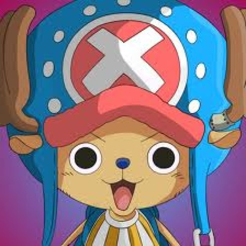

Tony-Tony Chopper (トニートニー・チョッパー, Tonī Tonī Choppā?) est un personnage de fiction appartenant à la franchise médiatique japonaise One Piece créée par Eiichirō Oda. Dans le manga, il apparaît au chapitre 134 du tome 15 ; dans l'anime, il apparaît dans l'épisode 81 intitulé Alors, ça boume ? Le docteur Kureha, un médecin aux allures de sorcière. Le passé du personnage est raconté dans l'épisode 84 Un renne au nez bleu ! Le secret de Chopper ; d'après le récit, Chopper est un renne qui a mangé le « Fruit de l'Humain » (Hito Hito no mi) qui le transforme en hybride moitié renne et moitié humain. Il est le médecin de l'équipage de Luffy. Dans le cadre de sa série humoristique le Petit Théâtre du chapeau de paille diffusée en annexe de One Pièce, Eiichirō Oda transforme son personnage en « Chopperman » super héros de type kawaii1,2, qui est depuis 2012 le héros de son propre manga dessiné par le mangaka Hirofumi Takei3
voix japonaise :Ikue Otani
voix francaise :Marie Van Ermengen
fruit du demon :Hito Hito no Mi
prime :100 berry
